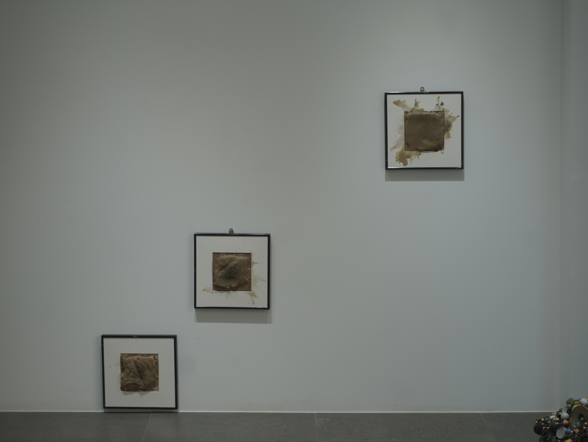

<무너짐은 가벼움이 아님을>
밀랍, 핸드포크 바늘, 타투용 잉크, 액자 등 혼합 매체. 가변 크기. 2026.
<무너짐은 가벼움이 아님을>작업은 <점상> 작업의 원형의 점들이 무작위로 모여 또 다른 구체를 이루는 형상, 즉 불안의 존재방식을 떠올리는 형상을 가지고 시작한다. 세 가지의 밀랍 위에 그 형상을 바늘과 잉크로 새겨넣었다. 그리고 열을 가하여 표면을 녹였다. 각각 열을 가하는 시간에 차이를 두었다. 밀랍이 열에 의해 녹아 이미지가 무너지는 과정이 남았다. 밀랍에 새겨진 점상 이미지는 설명하기 어려운 감각이나 상태를 하나의 형상으로 붙잡아보려는 잠정적인 시도이다. 이 형상의 손상이 곧 존재 자체의 소멸은 아니다. 오히려 처음의 이미지가 대상을 고정하여 설명할 수 없는 정답이 아니었음을 나타내는데에 가깝다. 설명할 수 없는 것을, 다시 설명 불가능한 상태로 되돌려놓는 과정인 것이다. 이는 곧 ‘설명되지 않음’ 상태 자체를 받아들이는 태도이다.
